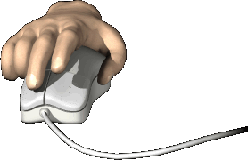
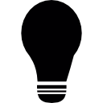
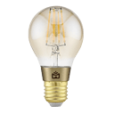

Duplo-Clique do Mouse
Um duplo-clique no mouse é feito pressionando o botão esquerdo do mouse duas vezes rapidamente em sequência, com um intervalo muito curto entre as duas pressões.
Essa ação é frequentemente usada para abrir arquivos ou pastas, selecionar palavras ou frases em um documento, ou executar outras ações específicas do programa em uso.
Prática
Clique duplo para ligar e desligar a lâmpada. Após a 5ª vez, você poderá continuar.
 Contador: 0
Muito bem! Clique em "Próximo" no menu de navegação para continuar.